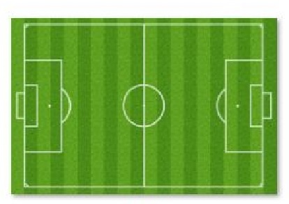

Field Basics
The diagram below shows the standard markings on a soccer field. Click any area to view an explanation of its role in the game.

Goal
The area where opposing players must get ball to score a point.
Goal box
The area from where a player makes a penalty kick.
Penalty box
The area in which a goal keeper can touch the ball with their hands.
Penalty arc
A marking indicating the extra distance players must keep from kicker during a penalty kick.
Center circle
The location of the kickoff. Defending players can't enter the circle until after the kick.